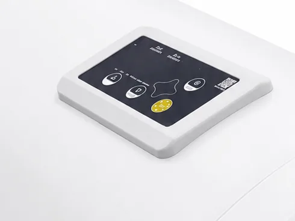
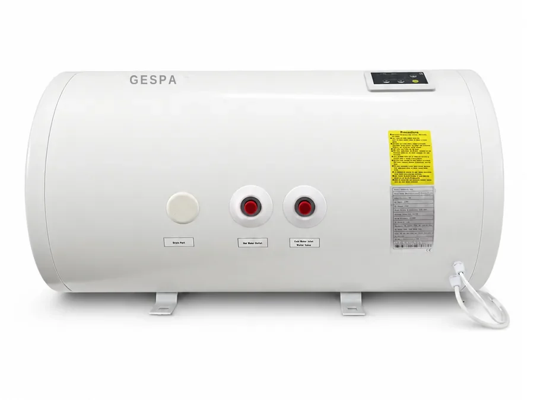
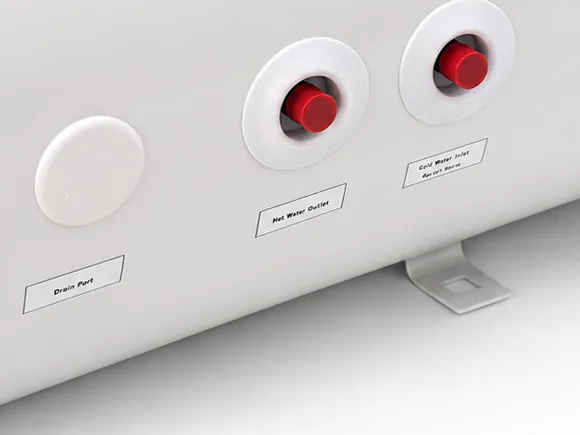
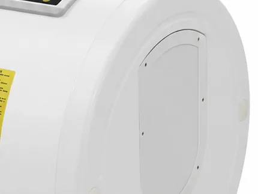
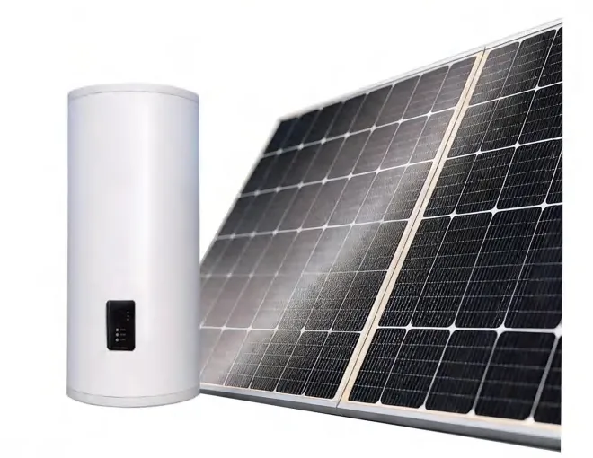
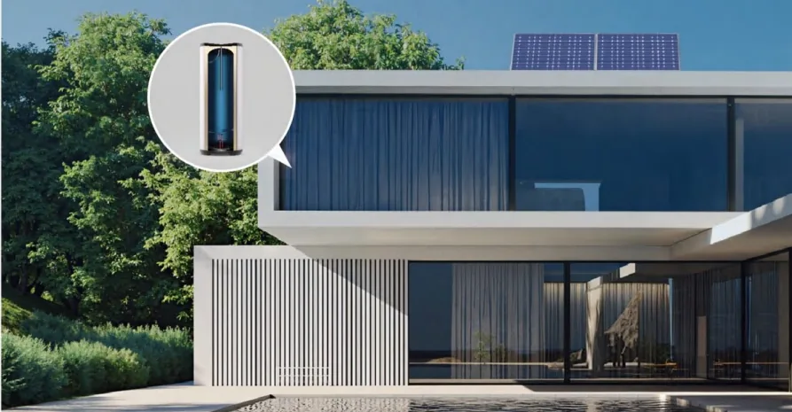
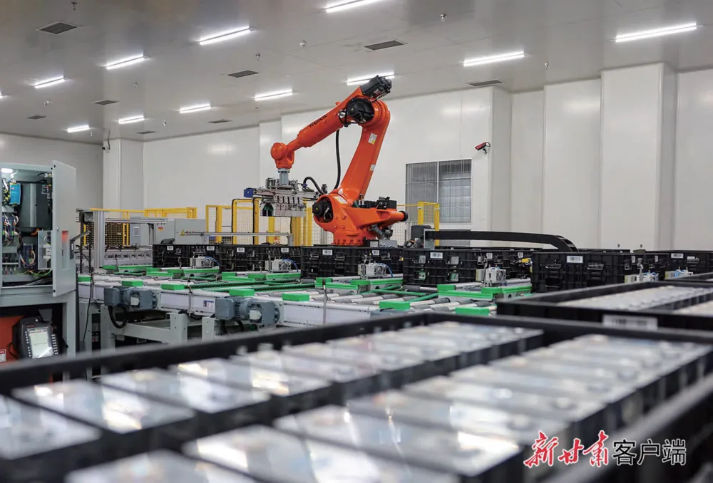
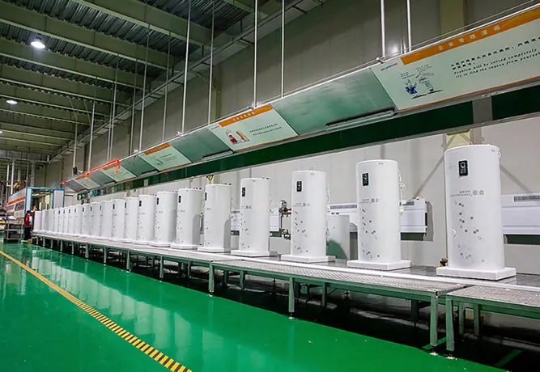

{kind=link}
{kind=link}
{kind=link}
{kind=link}
{kind=link}
{kind=link}
{kind=link}
{kind=link}

Dokunmatik kontrol paneli
Sıcaklık ayarı, ısıtma modu ve zaman programı tek panelden. Hata kodları ekranda görünür.
Elektrikli termosifon konforu, güneş enerjisi ekonomisi. Fotovoltaik panel suyu doğrudan güneşle ısıtır; bulutlu havalarda sistem otomatik şebeke desteğine geçer — 365 gün kesintisiz sıcak su.
Güncel fiyat için bize ulaşın modelleri gör →
Monokristal güneş panelleri suyu güneş enerjisiyle ısıtır; akıllı GF-20 kontrol cihazı sıcaklığı yönetir. Güneşsiz günlerde sistem otomatik olarak şebeke (AC) ısıtmaya geçer — termosifonun rahatlığı, güneşin ekonomisi.
Emaye iç tanklı yatay gövde, dokunmatik kontrol paneli ve standart 1/2" su bağlantıları. Küçük görsellere dokunarak açıyı değiştirin, büyütmek için görsele tıklayın.


Sıcaklık ayarı, ısıtma modu ve zaman programı tek panelden. Hata kodları ekranda görünür.

Sıcak su çıkışı, soğuk su girişi ve tahliye portu etiketli; emniyet ventili hortumu takılı gelir.

Rezistans ve magnezyum anot bu kapaktan sökülür — bakım için tankı yerinden indirmeye gerek yok.
Fotovoltaik panel elektriği doğrudan su ısıtıcısına aktarır — basit, güvenli ve verimli.
Monokristal panel güneş ışığını elektriğe çevirir.
Emaye iç tank, poliüretan yalıtımla ısıyı korur.
Banyo, mutfak — tüm ev için kesintisiz sıcak su.
Sistem otomatik olarak şebeke elektriğine geçer — yıl boyu kesintisiz sıcak su. Akıllı ısıtma stratejisi güneşli günlerde bedava enerjiyi, gece ise ucuz tarifeli elektriği kullanır.
Tek sistemle tüm evin ihtiyacı.
Güneş ışığı ile sıfır maliyet.
Tarifeye duyarlı otomatik strateji.
365 gün kesintisiz kullanım.
Elektrik-su teması yok; PV ile ısıtma.
Emaye tank + magnezyum anot.
Sabit sıcaklık, mevsimden etkilenmez.
Çevre dostu temiz enerji.
Su sıcaklığını, saati ve ısıtma modunu yöneten akıllı kontrol paneli. ±1°C ölçüm ve kontrol hassasiyetiyle konfor ve güvenlik.
Ailenizin sıcak su ihtiyacına göre 60 L'den 200 L'ye kadar emaye iç tanklı modeller. Güncel fiyat ve stok durumu için bize ulaşın; kesin teklif ücretsiz keşifle netleşir.
60L • 80L • 100L
Kompakt alanlar ve balkon uygulamaları için ideal.
120L • 150L • 200L
Kalabalık aileler ve yüksek tüketim için.
Küvet, birden fazla banyo veya pansiyon/apart kullanımı varsa bir üst kapasiteyi seçin. Emin değilseniz ücretsiz keşifte birlikte belirleyelim.
| Kapasite | Tip | PV gücü (DC) | Boyut (mm) | AC güç (kW) | İç tank | Fiyat |
|---|---|---|---|---|---|---|
| 60 L | Yatay | 550 W | 430 × 745 | 1,5 – 2 kW | Emaye | Teklif alın |
| 80 L | Yatay | 600 W | 430 × 893 | 1,5 – 2 kW | Emaye | Teklif alın |
| 100 L | Yatay | 700 W | 470 × 1140 | 2 – 2,5 kW | Emaye | Teklif alın |
| 120 L | Dikey | 900 W | 470 × 1251 | 2 – 2,5 kW | Emaye | Teklif alın |
| 150 L | Dikey | 1200 W | 480 × 1380 | 2,5 kW | Emaye | Teklif alın |
| 200 L | Dikey | — | — | — | Emaye | Teklif alın |
Voltaj: 110–240 V · Kontrol: buton / dokunmatik / mekanik · Su akışı mevsimlerden etkilenmez.
Tank tek başına bir sistem değildir. Kurulumu çalışır hâlde teslim eden bileşenlerin tamamı tekliften çıkmaz.
Poliüretan yalıtımlı, magnezyum anotlu ve rezistanslı su ısıtıcı — seçtiğiniz kapasitede.
Tankı doğrudan besleyen fotovoltaik modül; kapasiteye göre 550 W'tan 1200 W'a kadar.
PV ve şebeke ısıtmasını yöneten akıllı kontrol paneli, sıcaklık sensörüyle birlikte.
Panel ayakları, tank askı/ayak aparatları, cıvata ve dübeller.
Panel ile kontrol cihazı arasındaki güneş kablosu ve konnektörler.
Emniyet ventili, esnek bağlantı elemanları ve mevcut tesisata bağlama işçiliği.
Antalya, Manavgat, Side, Serik ve Alanya'da montaj ekibimizce kurulur. Diğer illere kargo ile ürün gönderimi yapılır; kurulum yerel ustanızla yapılabilir, montaj kılavuzu ve telefonla destek verilir.
Tipik bir konut kurulumu aynı gün içinde tamamlanır.
Çatı/teras yönü, mevcut tesisat ve hane halkı ihtiyacına göre kapasite belirlenir.
Tank taşıyıcı yüzeye sabitlenir, panel gölgesiz yöne uygun açıyla kurulur.
Soğuk su girişi, sıcak su çıkışı ve emniyet ventili bağlanır; panel kablosu kontrol cihazına çekilir.
Tank doldurulur, sızdırmazlık ve ısıtma testi yapılır, kullanım anlatılır.
Korozyona ve kirece dayanıklı iç tank; uzatılmış ve kalınlaştırılmış magnezyum anot ile uzun ömür.
TÜV, CE, UL ve UN38.3 sertifikalı; IEC uygunluk standartlarına göre robotik hatlarda üretilir. Yüksek enerji dönüşüm verimli monokristal PV panel teknolojisi.
Evinize en uygun kapasite ve montaj planı.
Deneyimli ekip, güvenli ve hızlı montaj.
Antalya bölgesinde yerel servis güvencesi.
Panel + su ısıtıcı + depolama tek elden.
Evde, banyoda ve çatıda gerçek kullanım; üretim hattından görüntüler.






Fotovoltaik su ısıtıcı, hareketli parçası olmadığı için bakım yükü düşük bir sistemdir.
Su sertliğine göre 2–4 yılda bir kontrol edilip gerekirse değiştirilir; tankı korozyondan korur.
Yılda 1–2 kez tozun yıkanması yeterli. Kirlenen panel verimi düşürür.
Yılda bir kez elle boşaltılarak çalıştığı kontrol edilir — basınç güvenliği için önemlidir.
Ürün garantisi üretici koşullarına tabidir; Antalya bölgesinde servisi biz veriyoruz.
Evet. Bulutlu/yağmurlu havalarda veya gece, sistem su sıcaklığına göre otomatik olarak şebeke (AC) ısıtmaya geçer ve yıl boyu kesintisiz sıcak su sağlar.
Hane halkı sayısına göre 60–200 L modeller mevcuttur. 1–2 kişi için 60–80 L, 3–4 kişi için 100–120 L, 5+ kişi için 150–200 L önerilir.
Yatay modeller (60/80/100 L) kompakt alanlar ve balkon uygulamaları için; dikey modeller (120/150/200 L) kalabalık aileler ve yüksek tüketim için idealdir.
Güneşli günlerde ısıtma büyük ölçüde bedavadır; geleneksel elektrikli termosifona göre önemli tasarruf sağlar. Kesin değer kullanım ve bölgeye göre değişir.
Çatı/teras entegre montaj ekibimizce yapılır. Emaye iç tank ve A-marka ekipmanla uzun ömür sunulur; detaylar ücretsiz keşifte netleşir.
Vakum tüplü sistemlerde su tüplerin içinde dolaşır; kireçlenme, donma ve tüp kırılması riski vardır. Fotovoltaik sistemde panel yalnızca elektrik üretir, su panele hiç girmez — tesisat basittir, kışın donma riski yoktur ve panel çatıya, tank ise iç mekâna kurulabilir.
Evet. Su panelde değil, yalıtımlı tankın içindedir; kontrol cihazında donma koruması vardır. Güneşin yetmediği günlerde şebeke desteği devreye girer.
Genellikle evet. Bağlantı ölçüleri standarttır; mevcut sıcak/soğuk su hatları kullanılabilir. Tankın asılacağı yüzeyin dolu ağırlığı taşıması ve panel için gölgesiz bir alan bulunması gerekir — keşifte bunlara bakıyoruz.
Hareketli parçası yoktur. Yılda 1–2 kez panelin tozunun alınması, yılda bir emniyet ventilinin kontrolü ve su sertliğine göre 2–4 yılda bir magnezyum anot kontrolü yeterlidir.
Ücretsiz keşif ve şeffaf teklif için bize ulaşın.